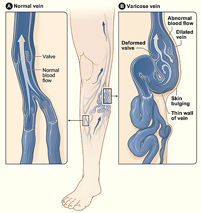

1. 下肢静脈瘤ってどんな病気?
静脈は、足で使われた血液を心臓へ戻す血管です。足の静脈には、重力で血液が下へ戻らないようにする逆流防止弁があります。
弁がうまく閉じなくなると血液が足にたまり、静脈の圧が高くなります。その結果、皮膚の近くの血管が太く、曲がりくねって浮き出た状態が下肢静脈瘤です。

弁が閉じ、血液を心臓へ一方向に送ります。
弁が閉じにくく、血液が逆流して静脈が拡張します。
出典：National Heart, Lung, and Blood Institute (NHLBI / NIH), Wikimedia Commons「Varicose veins.jpg」。米国連邦政府の著作物としてパブリックドメイン。
{kind=link}
なりやすい要因
年齢・体質
年齢とともに弁や血管壁が弱くなります。家族に静脈瘤がある方もなりやすい傾向があります。
立ち仕事・座り仕事
長時間同じ姿勢が続くと、ふくらはぎのポンプが働きにくくなります。
妊娠・出産
ホルモン変化や子宮による静脈の圧迫で、妊娠中に目立つことがあります。
肥満・運動不足
足から心臓へ血液を戻す働きに負担がかかることがあります。
2. どんな症状がありますか?
見た目だけで症状がない方もいます。一方で、夕方や長く立ったあとに症状が強くなることがあります。
🦵 だるさ・重さ
足が重い、疲れやすい、鈍い痛みがある。
💧 むくみ
夕方に靴下の跡がつく、足首が腫れる。
🌙 こむら返り
夜中や明け方に、ふくらはぎがつる。
🔥 かゆみ・ほてり
皮膚がむずむずする、熱く感じる。
進行すると起こること
- 足首の皮膚が茶色くなる色素沈着、湿疹、皮膚が硬くなる変化
- 静脈が赤く硬く痛む表在性静脈血栓症
- 傷が治りにくい静脈性潰瘍
- 皮膚の近くの静脈瘤からの出血
3. 受診の目安と、急いで受診する症状
痛み、だるさ、むくみ、かゆみなどで生活に困る場合や、皮膚の変化がある場合は、血管外科などの専門医へ相談してください。
出血が止まりにくい
横になって足を上げ、清潔な布で直接圧迫します。止まりにくい場合は救急受診してください。
片足が急に腫れて痛い
深部静脈血栓症(DVT)などの可能性があります。早めに医療機関へ連絡してください。
息苦しさ・胸の痛み
肺血栓塞栓症の可能性があります。救急要請を含め、直ちに医療機関へ相談してください。
4. 診察と超音波検査
診察では、立った状態で静脈瘤、むくみ、皮膚の変化を確認します。治療を考える場合は、通常下肢静脈超音波(デュプレックス・エコー)で調べます。
- 症状と経過を確認 ― いつから、どんなときにつらいか、血栓症や妊娠、治療歴などを聞きます。
- 足を診察 ― 静脈のふくらみ、左右差、むくみ、湿疹、色素沈着、潰瘍を見ます。
- 超音波で逆流を確認 ― 血液の流れる方向、弁の逆流、深い静脈の血栓の有無を調べます。
- 治療の地図を作る ― どの静脈が原因かを確認して、治療方法を選びます。
5. 日常生活と圧迫療法
🚶 歩く
ふくらはぎの筋肉を動かすと、血液を心臓へ押し戻す「筋ポンプ」が働きます。
🪑 同じ姿勢を減らす
長時間の立ちっぱなし・座りっぱなしを避け、足首を動かします。
🛏️ 足を少し高く
休むときに足を心臓より少し高くすると、むくみが楽になることがあります。
⚖️ 体重管理
無理のない運動と適切な体重管理は、足の静脈への負担を減らす助けになります。
弾性ストッキング
足を外から段階的に圧迫し、血液がたまりにくいようにします。だるさやむくみの軽減に役立ちますが、壊れた弁や逆流そのものを元に戻す治療ではありません。
6. 主な治療方法
症状、皮膚の変化、超音波で確認した逆流の場所、持病、希望をもとに選びます。現在は、原因となる伏在静脈の逆流に対して血管内治療が広く行われています。
🔥 血管内焼灼術(EVLA・RFA)
- 細いカテーテルを静脈内へ入れ、レーザーまたは高周波の熱で原因静脈を閉じます。
- 多くは局所麻酔で行い、傷が小さい治療です。
- 周囲の皮下に麻酔液を入れることがあります。
🧴 接着材治療
- 医療用の接着材で原因静脈を閉じる非熱治療です。
- 熱を使わず、周囲への多数の麻酔注射が不要な場合があります。
- アレルギーや炎症反応などを含め、適応を判断します。
💉 硬化療法
- 薬剤を液体または泡にして注入し、静脈を閉じます。
- 細い静脈瘤や残った枝、再発例などに用います。
- 複数回の治療が必要なことがあります。
✂️ 静脈瘤切除・ストリッピング
- 小さな切開から枝の静脈瘤を取り除く方法や、原因静脈を抜去する手術です。
- 血管の形や再発例などで選ばれることがあります。
- ほかの治療と組み合わせることもあります。
7. 治療当日と治療後
- 治療する静脈を確認 ― 超音波で位置を確認し、皮膚に印をつけます。
- 麻酔と治療 ― 方法に応じて局所麻酔などを行い、カテーテルや薬剤で治療します。
- 歩行して帰宅・入院 ― 日帰りが可能な治療もありますが、病状や施設により異なります。
- 術後の確認 ― 超音波などで治療部位と血栓の有無を確認することがあります。
治療後に気をつけること
- 歩行、入浴、仕事、運動、弾性ストッキングの期間は施設の指示に従う
- 強い痛み、急な腫れ、赤みの拡大、発熱、息苦しさがあれば医療機関へ連絡する
- しこりや皮下出血、つっぱり感は起こることがありますが、程度や経過を確認する
8. よくある質問(FAQ)
放っておくと必ず悪くなりますか?
薬で静脈瘤は消えますか?
弾性ストッキングだけで治りますか?
血管を閉じても血液は流れますか?
治療は痛いですか?
再発しますか?
妊娠中でも治療できますか?
静脈瘤と深部静脈血栓症は同じですか?
9. やさしい確認クイズ(全8問)
読んだ内容のおさらいです。気軽に挑戦してみてください。
10. 用語集(やさしい言葉で)
| 言葉 | やさしい意味 |
|---|---|
| 静脈 | 体で使われた血液を心臓へ戻す血管 |
| 下肢静脈瘤 | 足の静脈が太く曲がり、皮膚の近くに浮き出た状態 |
| 静脈弁 | 血液が足の方へ戻らないようにする一方通行の弁 |
| 逆流 | 弁が閉じず、血液が重力で足の方へ戻ること |
| 表在静脈 | 皮膚の近くを走る静脈 |
| 深部静脈 | 筋肉の間など、足の深いところを走る静脈 |
| 伏在静脈 | 足の代表的な表在静脈。大伏在静脈と小伏在静脈がある |
| 筋ポンプ | 歩行でふくらはぎの筋肉が静脈を押し、血液を心臓へ戻す働き |
| デュプレックス超音波 | 静脈の形と血液の流れを同時に調べるエコー検査 |
| 弾性ストッキング | 足を段階的に圧迫し、血液がたまりにくくする医療用靴下 |
| EVLA | レーザーの熱で原因静脈を閉じる血管内治療 |
| RFA | 高周波の熱で原因静脈を閉じる血管内治療 |
| 硬化療法 | 薬剤を注入して静脈を閉じる治療 |
| 表在性静脈血栓症 | 皮膚近くの静脈に血栓と炎症が起こり、赤く硬く痛む状態 |
| DVT | 深部静脈血栓症。足の深い静脈に血栓ができる病気 |
| 静脈性潰瘍 | 静脈の圧が高い状態が続き、足に治りにくい傷ができること |